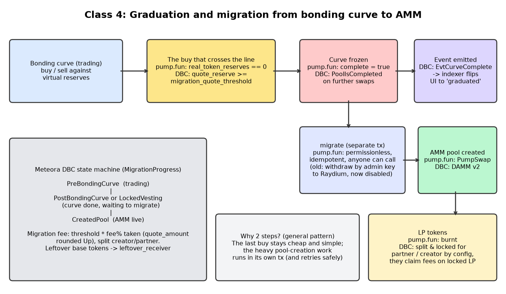

Part 4 · On-chain
Graduation and migration
The moment the stall becomes a shop: when the curve stops, who moves the money, and why moving it twice must be impossible.
1 Everyday analogy
Think of a light switch for a whole estate. Once the estate's last house is sold, the switch for the new road lamps goes ON. Anyone in the estate can walk up and press it, because there's no need to wait for the chairman. And pressing it again when it's already on does nothing. It can't make the lamps "more on" or pay the electrician twice.
A good migrate works the same way. It flips once, anyone can flip it, and a second press is harmless.
2 Design question
A coin's curve has just sold its last real token. (a) At what exact moment is it "complete", and what should happen to buys and sells after that? (b) Who should be allowed to call migrate, and what makes a second call safe?
Try to answer on your own first, in plain English. A gut answer is fine.
Reveal answer
(a) pump.fun Real: pump.fun docs: complete is set to true "at the end of a buy instruction, when real_token_reserves == 0". From then on the curve stops trading, because the liquidity is waiting to move. Meteora DBC Real: Meteora DBC docs completes a pool when its quote reserve reaches migration_quote_threshold.
(b) pump.fun's migrate is permissionless ("anyone can migrate a completed bonding curve") and idempotent ("running it on a completed and migrated bonding curve does nothing"). Safety comes from stored state: the program checks a "migrated" flag or step before doing anything, and it creates the pool at a deterministic address, so a second pool can't exist. Our clone's version of this is in capstone part 2.
3 Simple explanation
- Why permissionless? If only one server can migrate, that server becomes a single point of failure and a point of trust. pump.fun's old
withdrawinstruction did exactly that: an authority withdrew the liquidity and migrated it "from an off-chain server". It's now disabled in favour ofmigrate. - What moves: the SOL collected by the curve, plus tokens for the pool side. These are deposited into an AMM pool: PumpSwap for pump.fun, DAMM v2 for Meteora DBC.
- What happens to the LP? In class we noted that pump.fun burns the LP tokens, so the liquidity can't be pulled. Meteora DBC locks the LP for the partner and the creator, who can then claim trading fees from it Real: Meteora DBC docs.
- Migration costs: pump.fun's Global account has a
pool_migration_fee, the minimum lamports needed to pay for the accounts thatmigratecreates. - Multi-step migration: Meteora DBC tracks a
MigrationProgressstate on the pool, so migration can be completed step by step.
4 The math
Completion conditions:
With the default pump.fun numbers, the curve holds about 85.005 SOL when it completes (chapter 2). Our clone General pattern / our clone seeds the pool with all of that SOL and the unsold 206.9M tokens (1,000M supply − 793.1M sold). Here is a check worth doing:
The pool opens within about 0.01% of the curve's last price, so there's no price jump to arbitrage at graduation. That's our arithmetic on pump.fun's public numbers, ignoring the migration fee. It isn't a claim about pump.fun's exact pool deposit.
5 TypeScript code
Graduation inside our engine's applyBuy General pattern / our clone:
c.realTokenReserves -= q.tokensOut;
// ...
if (c.realTokenReserves === 0n) c.complete = true; // the exact moment the curve completesAnd the idempotent guard at the top of our migrate. The full version, with crash-safe steps, is in capstone part 2.
const c = this.coin(mint);
if (c.status === "Migrated") return "noop"; // 2nd call: no pool, no transfer, no event
if (!c.curve.complete || c.curve.realTokenReserves !== 0n) throw new Error("CurveNotComplete");
const poolId = "pool:" + mint; // deterministic, like a PDA6 TypeScript exercise
Write two graduation checks, one per style, and a test for each edge: one token left, exactly zero left, threshold minus one lamport, and exactly the threshold.
export function pumpStyleComplete(realTokenReserves: bigint): boolean { /* TODO */ return false; }
export function dbcStyleComplete(quoteReserve: bigint, migrationQuoteThreshold: bigint): boolean { /* TODO */ return false; }Show a solution
export const pumpStyleComplete = (real: bigint) => real === 0n;
export const dbcStyleComplete = (quote: bigint, threshold: bigint) => quote >= threshold;7 Architecture diagram


8 Sources
- pump.fun public docs: Pump program README
- Meteora docs: DBC migration and liquidity
- Meteora docs: What is DBC?
- Meteora Dynamic Bonding Curve program (GitHub)
migrate deposits. "LP tokens are burned" comes from our class notes. This build didn't re-check it against pump.fun's docs.